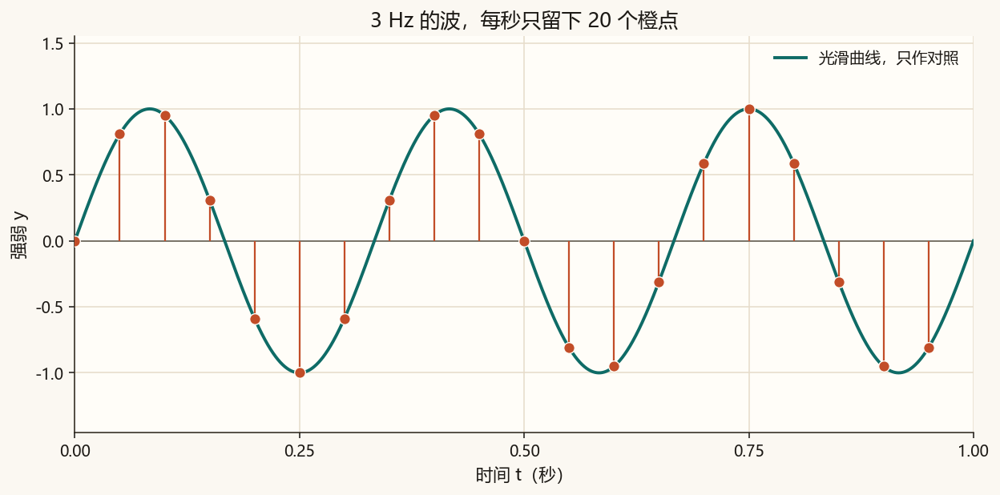
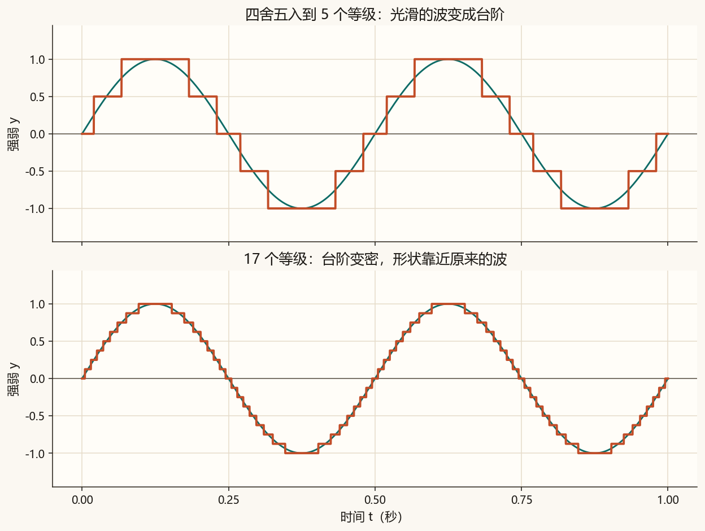
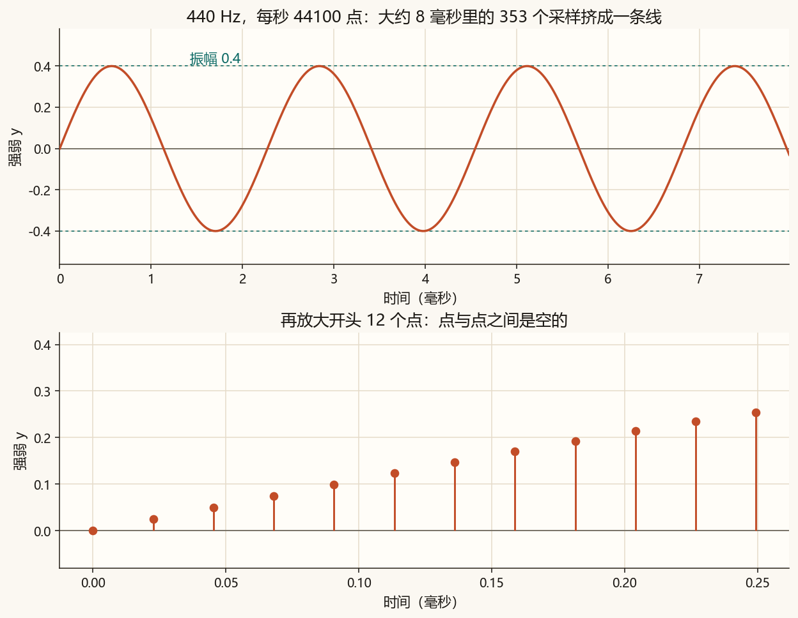
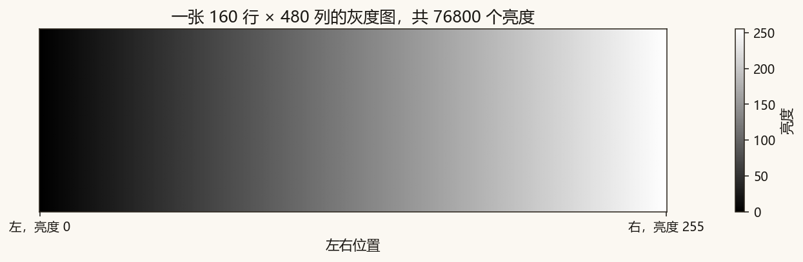
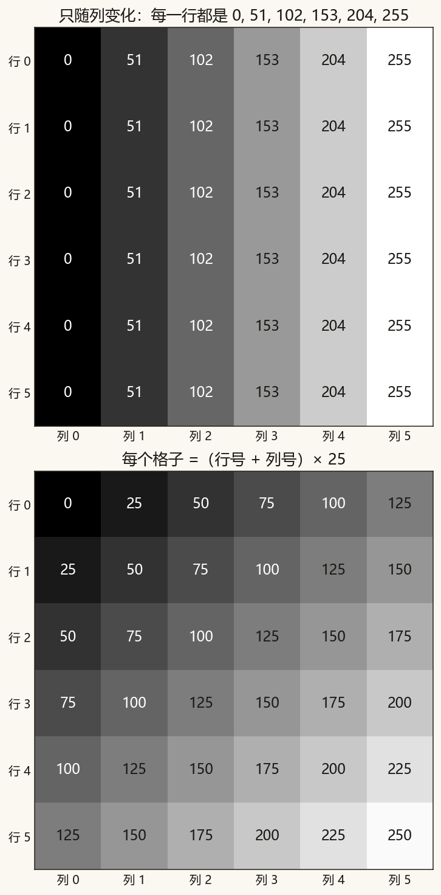
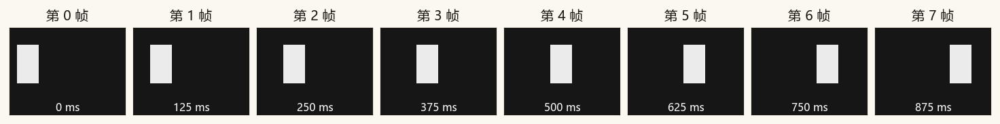

第 1 篇 · 信号是数字 · 约 50 分钟
第 0 篇的曲线看起来连绵不断。电脑文件里记下的是按顺序排好的数：声音是一排，灰度图是一张表，视频是按时间排好的很多张表。
采样是沿着时间，每隔一小段就记下当时的强弱。电影胶片是一格一格的，放得够快就像在动；采样点放得够密，听起来就像连续的振动。
两个采样时刻之间，文件里没有第三个数。播放器按时间顺序把这些整数变成电压，再推动耳机。点与点之间怎么过渡，由播放设备完成。

采样率是每秒记下多少个数，单位也是 Hz。采样率 44100 Hz 的意思是：每秒 44100 个数值，相邻两点相隔 1/44100 秒，大约 0.0000227 秒。
| 采样率 | 每秒个数 | 常出现在 |
|---|---|---|
| 8000 Hz | 8000 | 电话语音这一档的音质 |
| 44100 Hz | 44100 | CD。本篇的课文音频用它 |
| 48000 Hz | 48000 | 视频和很多录音软件 |
先记住一句，理由放到后面再讲：每秒的点数要比你关心的最高频率的两倍还多，音高才稳得住。440 Hz 配 8000 已经够用，配 44100 更从容。练习时如果把频率设得不低于采样率的一半，脚本会提示你，听起来也会变成别的音高。
采样选定时刻。量化选定每个时刻允许写下的整数。wav 常用 16 位整数，范围从 −32768 到 32767，一共 65536 种不同的值。
脚本把强弱 1 对应到 32767，强弱 −1 对应到 −32767。公式是：文件里的整数 = 四舍五入(y × 32767)。16 位整数还能再多表示一个 −32768，这里为了正负对称，没有用到它。
真正的 wav 等级非常密，听起来仍是光滑的。下面故意只用很少的等级，是为了让台阶用眼睛就能看见。青色是原来的波，橙色是四舍五入之后的高度。

这个方框用一条 3 Hz 的波演示 1 秒，方便数点。写进 wav 的 440 Hz 在下一节。青线是对照。橙点是采样时刻的原始高度。橙色台阶是这些高度再四舍五入之后的结果。
先把量化级数拖到最右，台阶会贴住橙点，方便只看采样有多稀。再把级数拖回 5，看四舍五入把点挪到了台阶上。最后把每秒点数加到 48，点和台阶会一起靠近青线。
第 0 篇的公式不变。差别是时间不再为了画图去取 2000 个随意的点，而是严格按采样率取值。默认参数：频率 440 Hz，采样率 44100，时长 1 秒，振幅 0.4。
sample_rate = 44100
frequency = 440.0
duration = 1.0
amplitude = 0.4
count = int(sample_rate * duration) # 44100 个数
t = np.arange(count) / sample_rate # 0, 1/44100, 2/44100, ...
y = amplitude * np.sin(2 * np.pi * frequency * t)
pcm = np.round(y * 32767).astype(np.int16) # 写成 16 位整数振幅用 0.4，是为了离开最大音量一段距离。强弱 1 对应整数 32767，所以振幅 0.4 的波峰对应的整数大约是 0.4 × 32767 = 13107。
第 1 个点（序号 n = 1）可以手算核对。时间 t = 1/44100 ≈ 0.00002268 秒。y = 0.4 × sin(2π × 440 × t) ≈ 0.025059。整数 = 四舍五入(0.025059 × 32767) = 821。n = 0 时 t = 0，sin(0) = 0，所以第一个整数是 0。这和相位为 0 的正弦从中线起步是同一件事。
| n | t（秒） | 小数 y | 文件中的整数 |
|---|---|---|---|
| 0 | 0.00000000 | 0.000000 | 0 |
| 1 | 0.00002268 | 0.025059 | 821 |
| 2 | 0.00004535 | 0.050020 | 1639 |
| 3 | 0.00006803 | 0.074785 | 2450 |
| 4 | 0.00009070 | 0.099255 | 3252 |
| 5 | 0.00011338 | 0.123336 | 4041 |
| 6 | 0.00013605 | 0.146932 | 4815 |
| 7 | 0.00015873 | 0.169951 | 5569 |
仍在本文件夹的终端里运行：
python code/ch01_signal.py终端会打印和表 1-2 相同的 8 行，并出现「自检通过」。生成的文件：
assets/audio/note_440hz.wav：课文音频，永远是 440 Hz、44100 Hz 采样、1 秒、振幅 0.4。assets/audio/note_mine.wav：跟随脚本顶部「改这里」。默认参数下，它和课文音频相同。assets/figures/，渐变原图在 assets/images/gradient.png。播放前把系统音量调小。这是持续的纯音，听到稳定的一声就够了，听一两秒即可。若网页里的播放器没有声音，用系统播放器打开同一个 wav。
课文音频：
练习文件（改参数并重新运行后，刷新本页再听；若仍是旧声音，重新打开这一页）：
1 秒的单声道 16 位音频，数据是 44100 × 2 = 88200 字节，再加上 44 字节的文件头，一共 88244 字节。资源管理器里大约显示为 86 KB。你可以右键查看文件大小，对一下这个数。

灰度图的每个像素是一个亮度。本篇用 0 到 255：0 是黑，255 是白。一个 8 位整数有 256 种可能，从 0 数到 255。彩色图的每个像素还有红、绿、蓝三个数，这一篇每个像素只留一个亮度。
下面这张图高 160、宽 480，一共 160 × 480 = 76800 个亮度。同一张图的原文件是 assets/images/gradient.png，可以用看图软件打开：左边黑，右边白。

480 列不方便逐个读。把同一件事收成 6 列，每一列一个整数：列号从 0 数起，亮度 = 列号 × 51。
| 列 0 | 列 1 | 列 2 | 列 3 | 列 4 | 列 5 | |
|---|---|---|---|---|---|---|
| 任意一行 | 0 | 51 | 102 | 153 | 204 | 255 |
亮度也可以同时沿两个方向变。下面每个格子的数 =（行号 + 列号）× 25，行和列都从 0 数起。左上角是 0，右下角是 250。
| 列 0 | 列 1 | 列 2 | 列 3 | 列 4 | 列 5 | |
|---|---|---|---|---|---|---|
| 行 0 | 0 | 25 | 50 | 75 | 100 | 125 |
| 行 1 | 25 | 50 | 75 | 100 | 125 | 150 |
| 行 2 | 50 | 75 | 100 | 125 | 150 | 175 |
| 行 3 | 75 | 100 | 125 | 150 | 175 | 200 |
| 行 4 | 100 | 125 | 150 | 175 | 200 | 225 |
| 行 5 | 125 | 150 | 175 | 200 | 225 | 250 |
例如行 2、列 3： (2 + 3) × 25 = 125。脚本把这张表画成图，并另存成可以用记事本打开的 assets/figures/ch01_grid.csv。打开后看到的就是表 1-4 里的数字，逗号用来分列。

一张图是一张数表。视频在这之外还有时间：第 0 秒一张，过一会儿再一张。每秒换多少张，叫帧率。电影常见每秒 24 帧，视频常见 25、30 或 60 帧。
下面 8 张是脚本生成的。白块往右走。相邻两帧相隔 125 毫秒，也就是 0.125 秒。第 7 帧在 875 毫秒；若按每秒 8 帧播放，下一帧才会落在 1000 毫秒。本篇把 8 张拼在一张图里，方便一眼看完。真正的视频文件会按时间顺序存放这些帧。

算一笔账就知道视频为什么占地方。100×100 的灰度图有 10000 个亮度。每秒 25 帧时，光是亮度数字就有 10000 × 25 = 250000 个，这还没算彩色，也没算压缩。压缩要等后面讲到频率之后再谈。
打开 code/ch01_signal.py。顶部「改这里」只影响 note_mine.wav 和 ch01_my_zoom.png。课文的 note_440hz.wav 每次仍按 440 Hz 重写。
FREQUENCY = 440.0 改成 880.0，运行脚本，刷新本页，听 note_mine.wav。880 Hz 比 440 Hz 高八度，仍是音名 A，听起来更高。再打开 ch01_my_zoom.png：同样大约 8 毫秒里，来回次数大约变成原来的两倍（880 × 0.008 ≈ 7 次）。440.0，把 SAMPLE_RATE = 44100 改成 8000，再运行。1 秒现在只有 8000 个整数，文件大约是 8000 × 2 字节再加文件头。440 Hz 仍然清楚，因为 8000 比 440 的两倍大得多。放大图标题里的采样个数会从 353 变成 64。若终端中文是乱码，先执行 chcp 65001。数字、wav 和图片不受影响。听不到声音时，先把音量调到适中，再用系统播放器打开 wav。
48000 × 3 = 144000 个。
t = 0 时，sin(0) = 0。再乘振幅 0.4 仍是 0，四舍五入后还是 0。这就是相位为 0 的正弦从中线起步。
一张图有 640 × 480 = 307200 个亮度。每秒 25 帧则是 307200 × 25 = 7680000 个。
下一篇把两个正弦加在一起，看一条更复杂的曲线怎样由纯音叠出来，再用越来越多的谐波把方波拼出来。